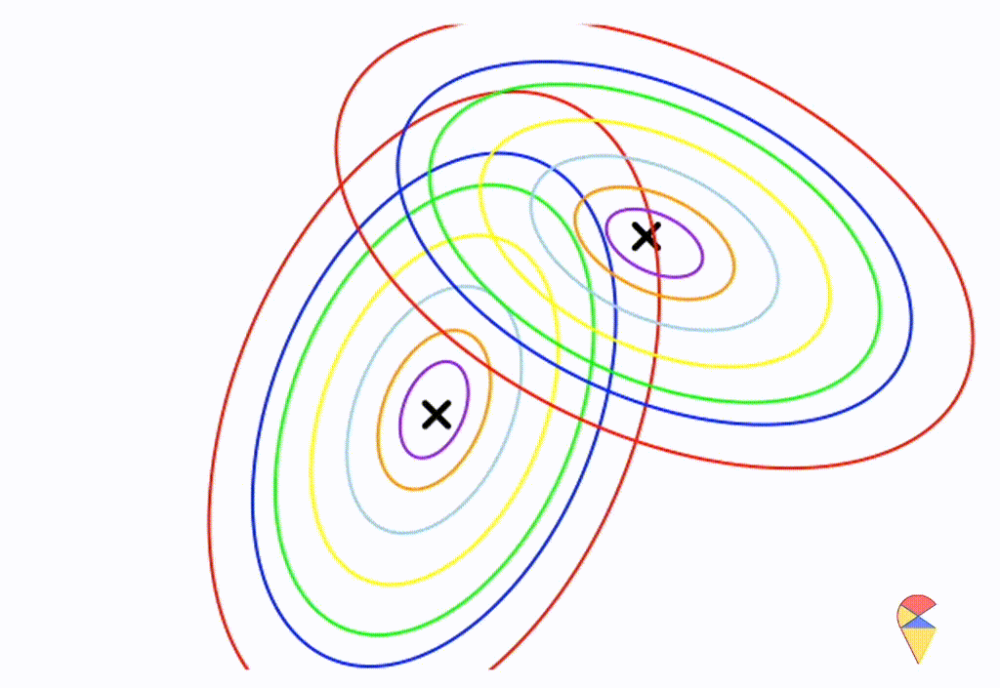

data = iris[51:150,]
data$Species = as.factor(as.numeric(data$Species))
levels(data$Species) = c("versicolor","virginica")
pairs(data[,-5], col = data[,5])4.2 Classifier constructed based on Gaussian model
Let’s summarize the basic idea of the motivating example. Essentially, we propose two candidate models based on the labels, use these two models to evaluate the object we want to predict, and then make a judgment based on the likelihood evaluation results. The candidate models here are normal distributions. Remember? A probabilistic model is essentially a probability distribution.
4.2.1 Gaussian Discriminan Analysis
Up to this point, we have actually designed a function where the input consists of the two feature variables, height and weight, and the output is the prediction of the label. A classifier constructed based on this idea is called Gaussian Discriminant Analysis (GDA). Next, let’s describe this method using precise mathematical language.
Suppose we have a target variable, \(Y\) which has \(\{-1, 1\}\) as possible values. We denote the feature variables as \(\textbf{X} = (X_1, X_2, \dots, X_p)^{\top}\). Just emphasize that \(\textbf{X}\) is not a specific observation, and it is just a random variable now. Then we assume that \[ \begin{matrix} \textbf{x}|y=1 & \sim & \mathcal{N}(\boldsymbol{\mu}_1,\boldsymbol{\Sigma}_1)\\ \textbf{x}|y=-1 & \sim & \mathcal{N}(\boldsymbol{\mu}_2,\boldsymbol{\Sigma}_2) \end{matrix} \] With this model, we make the prediction by comparing the likelihood values of a new case with respect to each distribution, i.e. a new case \(\textbf{x}_{\text{new}}\) is predicted as category \(1\) if \[ f(\textbf{x}_{new}; \boldsymbol{\mu}_1,\boldsymbol{\Sigma}_1) > f(\textbf{x}_{new}; \boldsymbol{\mu}_2,\boldsymbol{\Sigma}_2) \] where \(f\) is the density function of multivariate Gaussian distribution, otherwise, the new case will be classified to another group.
4.2.2 Linear or Nonlinear?
In Lecture 1, we explained the general form of a linear classifier, i.e., the decision boundary of the classifier is a line, a plane, or a hyperplane in higher dimensions. So far, our GDA is just an R function, kind of black box, so the question is: Is it a linear classifier? We are going to investigate it in this subsection.
First, to understand the nature of the classifier’s decision boundary, it is best to express it using mathematical language. Review the decision rule presented in the previous subsection, it is very easy to see the decision boundary can be represented as \[ \ell = \left\{ \textbf{x}: f(\textbf{x}; \boldsymbol{\mu}_1,\boldsymbol{\Sigma}_1) = f(\textbf{x}; \boldsymbol{\mu}_2,\boldsymbol{\Sigma}_2) \right\} \] where \(f_1\) and \(f_2\) are p.d.f of normal distribution. While the notation above is in set theory language, it is not difficult to understand it. It means that, in set \(\ell\), we collect all the points \(\textbf{x}\) that satisfy the condition, \(f(\textbf{x}; \boldsymbol{\mu}_1,\boldsymbol{\Sigma}_1) = f(\textbf{x}; \boldsymbol{\mu}_2,\boldsymbol{\Sigma}_2)\), i.e. equal likelihood in a certain dimensional space.
Next, I will do some experiments in R to investigate the properties the decision boundary. Obviously, the decision boundary is determined by the two density functions together. So, my plan is to assign different parameter values to the two density functions, then, using the contour graphs of the two density functions, find the points where their values are the same, and connect them. This way, we can roughly understand the shape of the decision boundary.
Before we begin, there’s one thing we need to clarify. We only need to focus on the effect of covariance matrix, because it controls the shape of the distribution, and the shape of the distribution determines the shape of the decision boundary.
First, let’s check the simplest situation, that is the two groups all have the simplest covariance matrix, i.e. \[ \boldsymbol{\Sigma}_1 = \boldsymbol{\Sigma}_2 = \left( \begin{matrix} 1 & 0 \\ 0 & 1 \end{matrix} \right) \]
From the animation above, we can see that if we connect all the intersection points of contours with the same color, it will roughly form a straight line. In this very special case, our decision boundary is linear. Now, let’s relax the conditions a bit so that the Gaussian model can cover more possibilities, but not too far—just a small step.
Let’s assume that the two distributions have the same, but arbitrary, covariance matrix， i.e. \[ \boldsymbol{\Sigma}_1 = \boldsymbol{\Sigma}_2 = \left( \begin{matrix} 1 & 0.3 \\ 0.3 & 0.5 \end{matrix} \right) \]
Wow, it is still a linear classifier. Now, let’s further relax the conditions to the most general case, where the two distributions have completely different and arbitrary covariance matrices.
\[ \boldsymbol{\Sigma}_1 = \left( \begin{matrix} 0.5 & 0.25 \\ 0.25 & 1 \end{matrix} \right) \] \[ \boldsymbol{\Sigma}_2 = \left( \begin{matrix} 1 & -0.3 \\ -0.3 & 0.5 \end{matrix} \right) \]

From the animation above, we can that the decision boundary is not linear anymore. Alright, we can draw a conclusion: the decision boundary in GDA is determined by the covariance matrices of the two distributions. If the two distributions share the same covariance matrix, then the classifier is linear, often referred to as Linear Discriminant Analysis (LDA). Otherwise, it is nonlinear, though not overly flexible—the decision boundary is a quadratic function, which is why it’s also known as Quadratic Discriminant Analysis (QDA).
Of course, this is just an empirical conclusion and not strictly formal. If you’re interested, you can try deriving the decision boundary using the density function of the multivariate normal distribution. You can refer to a textbook for a deeper understanding—we won’t go into detail here. (Or leave it to Sia in future. ToDo4Sia, write a separate note to explain. )
4.2.3 Training algorithm and Example in R
One relatively unique aspect is that the algorithm for training this classifier is very simple—it simply estimates the parameters of the two populations based on the data. More specifically, suppose we have a data set containing both target variable y and the data matrix of feature variables, X. We can use the target variable to find all rows from each class in X and estimate the means and covariance matrix respectively. Then we are just ready to construct the classifier with those parameters estimation.
There’s just one detail to pay attention to: in LDA, how do we estimate the shared covariance matrix? This shared covariance is called the pooled covariance matrix. You might recall that in a two-sample t-test in basic statistics, we also need to calculate the pooled variance. It’s the same principle here. To estimate the pooled covariance matrix, we can first mean-center each data set separately and then use all the mean-centered data to estimate the covariance matrix.
Let’s illustrate this with the following example in R.
R Examples
First, we import a data set for this demo. Here, we use iris data, but only consider two two species, versicolor and virginica
Next, we want to write a R function to classify each flower based on the 4 feature variables.
Second, we can use target variable y to find out the rows of X for each species and estimate the mean and contrivance matrix.
# split data to X and Y
X = as.matrix(data[,-5])
y = data[,5]
# estimate the mean vectors and covariance matrices
(mu1 = colMeans(X[1:50,]))Sepal.Length Sepal.Width Petal.Length Petal.Width
5.936 2.770 4.260 1.326 (S1 = cov(X[1:50,])) Sepal.Length Sepal.Width Petal.Length Petal.Width
Sepal.Length 0.26643265 0.08518367 0.18289796 0.05577959
Sepal.Width 0.08518367 0.09846939 0.08265306 0.04120408
Petal.Length 0.18289796 0.08265306 0.22081633 0.07310204
Petal.Width 0.05577959 0.04120408 0.07310204 0.03910612(mu2 = colMeans(X[-(1:50),]))Sepal.Length Sepal.Width Petal.Length Petal.Width
6.588 2.974 5.552 2.026 (S2 = cov(X[-(1:50),])) Sepal.Length Sepal.Width Petal.Length Petal.Width
Sepal.Length 0.40434286 0.09376327 0.30328980 0.04909388
Sepal.Width 0.09376327 0.10400408 0.07137959 0.04762857
Petal.Length 0.30328980 0.07137959 0.30458776 0.04882449
Petal.Width 0.04909388 0.04762857 0.04882449 0.07543265Now, we are ready to build the function of our classifier.
library(mvtnorm)
# function for making decision
classifier = function(x,mu1,S1,mu2,S2){
# Here, we use function 'dmvnorm' in package 'mvtnorm'
ell1 = dmvnorm(x,mu1,S1)
ell2 = dmvnorm(x,mu2,S2)
res = ifelse(ell1 > ell2, "versicolor", "virginica")
return(res)
}We can apply our classifier on the 27th flower and check the accuracy of the classifier.
id = 27
classifier(X[id,],mu1, S1,mu2,S2)[1] "versicolor"y[id][1] versicolor
Levels: versicolor virginicares = numeric(100)
for(i in 1:100){
res[i] = classifier(X[i,],mu1, S1,mu2,S2)
}
(acc = mean(res == y))[1] 0.97Looks good. Quiz: is it LDA or QDA? You need to estimate the pooled contrivance matrix if you want to go for QDA.
demeanX = X
demeanX[1:50,] = X[1:50,] - matrix(rep(mu1,50), ncol = 4, byrow = T)
demeanX[51:100,] = X[51:100,] - matrix(rep(mu2,50), ncol = 4, byrow = T)
S = cov(demeanX)